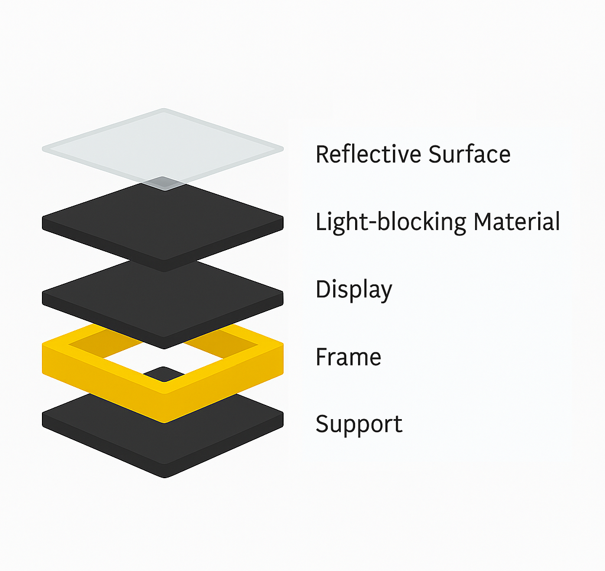

Modular Smart Mirror with Reflective Display and Voice-Controlled Interface
The Smart Mirror looks just like a regular mirror, but contains a hidden screen that displays valuable information such as time, weather, calendar, and news. Crafted from a special two-way reflective material, it reflects your face while also allowing light from the display to pass through. Powered by a Raspberry Pi, the mirror updates information in real-time from the internet and can include features like motion activation and voice commands for hands-free use.
This project was created as part of a two-term senior design course sequence in Computer Engineering at San Francisco State University in Spring 2025.
Background
The objective of this project was to create an interactive, modular smart mirror that enhances daily routines by providing real-time information in a seamless, hands-free way. The problem addressed is the lack of unobtrusive, always-available information displays in the home. While smart displays exist, few combine the utility of a mirror with the power of IoT and voice control. Our approach uses a high-transmission two-way mirror, a slim display, and open-source software to create a device that is both functional and aesthetically pleasing. This project serves tech-savvy homeowners and anyone interested in smart home innovation, offering a customizable, expandable platform for future features.
Design Considerations
We explored several design options, from simple off-the-shelf frames to fully custom woodwork. The final design uses a slim 15.6" display behind an A3-sized two-way acrylic mirror, with a Raspberry Pi 3A+ running MagicMirror². We chose open-source software for flexibility and cost-effectiveness, and modular hardware for easy upgrades. Practical considerations included keeping the total cost under $300, ensuring safe wall-mounting, and maintaining reliable, headless operation. Tradeoffs included balancing display brightness with mirror reflectivity and choosing between acrylic and glass for the mirror. Experiments with different frame materials and light isolation techniques led to a clear, readable display without sacrificing mirror quality.
Results

The completed Smart Mirror system integrates a Raspberry Pi, slim display, two-way mirror, and optional sensors (motion, audio) in a compact, wall-mountable frame. The MagicMirror² software displays time, weather, calendar, and news modules, with planned extensions for voice and face recognition. The system was tested for display clarity in various lighting, Wi-Fi stability, and boot time. The mirror maintains high reflectivity while clearly showing digital content. The total build cost was under $300.
System Overview
Hardware: Raspberry Pi 3A+, 15.6" display, A3 two-way mirror, PIR sensor (optional), speakers (optional)
Software: Raspberry Pi OS Lite, MagicMirror², PM2, Node.js, optional modules for remote control and voice assistant
Budget
Raspberry Pi 3A+: $50
15.6" Display: $100
Two-way Mirror: $60
Frame & Materials: $40
Misc. Electronics: $30
Total: ~$280
Discussion and Conclusion
What worked: .
What didn’t: .
Improvements: .
Tradeoffs: .
Comparison: .
Societal/Ethical: .
Conclusion: The Smart Mirror is a scalable, innovative project that demonstrates embedded systems, modular software, and user-centered design—aligned with ENGR 696/697 learning goals.
Team Members & Bios
Eduardo Ruiz Lead Hardware Engineer Eduardo designed and assembled the hardware, including the frame, electronics, and integration of sensors.
Diana Lazarte Lead Software Engineer Diana developed the software stack, configured MagicMirror², and implemented the modular interface.